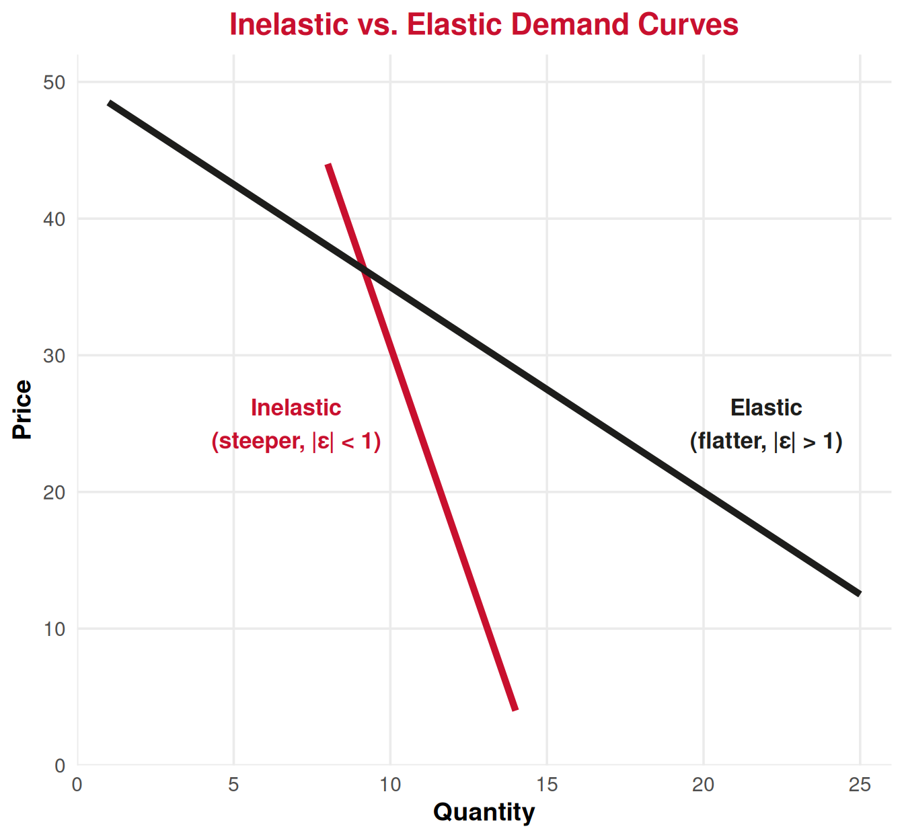
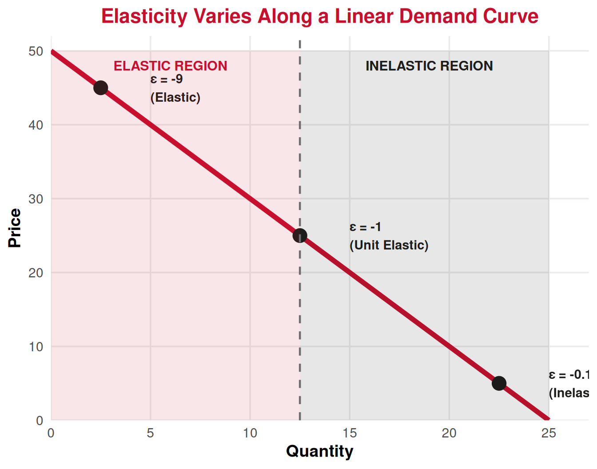
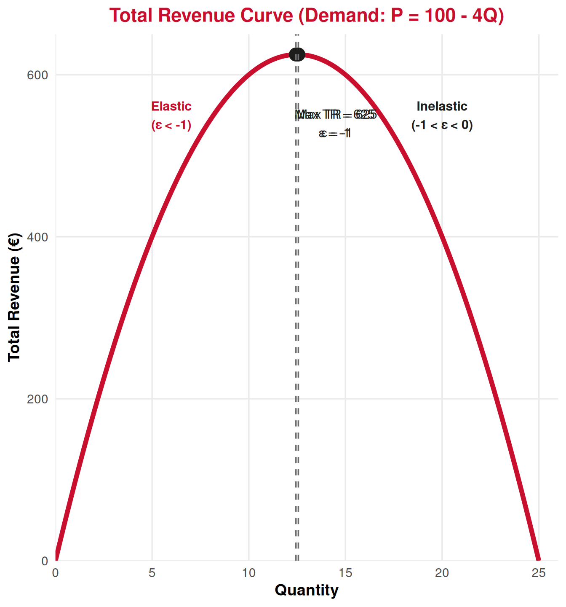
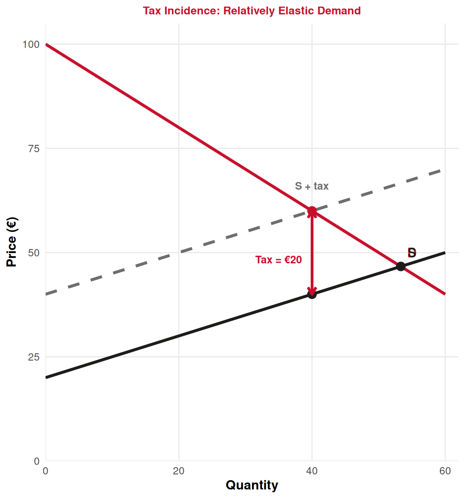

Consumer Theory
Lecture 9: Calculation and Determinants of Demand Elasticity
Paulo Fagandini
2026
Recap: Lecture 8 ⏪
What we covered last time:
- Individual demand: derived from utility maximization as price changes
- Market demand: horizontal sum of all individual demands
- Linear demand: \(P = b - mQ\) (inverse form)
- Movements along (price change) vs. Shifts (income, preferences, related goods)
- Consumer surplus: net benefit consumers get from market participation
The Key Question Today: How sensitive is quantity demanded to price changes? 🤔
Not all demand curves are created equal — some goods see huge changes in quantity when price moves; others barely budge!
Introduction to Elasticity
Why Elasticity Matters 📈
The Revenue Problem
A hotel wants to increase revenue. Should it raise or lower prices? The answer depends on how responsive tourists are to price changes!
Two scenarios:
Scenario A: ✈️ Flights from Lisbon to Paris
Price increases 10% → Bookings drop 25%
👉 Passengers are very sensitive to price
Revenue falls when price rises!
Scenario B: 🔌 Hotel electricity
Price increases 10% → Usage drops 2%
👉 Hotels barely respond to price
Revenue rises when price rises!
Elasticity measures this price sensitivity precisely. Essential for pricing, taxation, and policy!
What Is Price Elasticity of Demand? 📏
Price Elasticity of Demand (PED or \(\varepsilon_d\))
The percentage change in quantity demanded when price changes by 1%, ceteris paribus.
\[\varepsilon_d = \frac{\% \Delta Q}{\% \Delta P} = \frac{\Delta Q / Q}{\Delta P / P}=\frac{\Delta Q}{\Delta P}\frac{P}{Q}\]
Key properties:
- \(\varepsilon_d\) is almost always negative (law of demand: \(\uparrow P \Rightarrow \downarrow Q\))
- We often report the absolute value: \(|\varepsilon_d|\)
- It’s unit-free: same whether measuring in euros or dollars, trips or thousands of trips
Example: If \(\varepsilon_d = -2\), then a 1% increase in price causes a 2% decrease in quantity demanded.
💡 Elasticity tells us the proportional response, not the absolute change!
Elastic vs. Inelastic Demand ⚖️
We classify demand based on \(|\varepsilon_d|\):
| Category | Condition | Interpretation | Example |
|---|---|---|---|
| Perfectly Inelastic | \(\|\varepsilon_d\| = 0\) | Quantity doesn’t change at all | Life-saving medicine |
| Inelastic | \(0 < \|\varepsilon_d\| < 1\) | Quantity changes less than price | Gasoline (short run) |
| Unit Elastic | \(\|\varepsilon_d\| = 1\) | Quantity changes equally with price | Some textbooks estimate for housing |
| Elastic | \(\|\varepsilon_d\| > 1\) | Quantity changes more than price | Restaurant meals, tourism |
| Perfectly Elastic | \(\|\varepsilon_d\| = \infty\) | Any price increase → demand drops to zero | Competitive market goods |
Key insight: If \(|\varepsilon_d| > 1\) (elastic), consumers are very responsive. If \(|\varepsilon_d| < 1\) (inelastic), they are not very responsive.
Visualizing Elasticity 📉
Visual intuition:
Inelastic demand (red):
- Steeper curve
- Quantity barely responds to price
- \(|\varepsilon_d| < 1\)
Elastic demand (black):
- Flatter curve
- Quantity responds a lot to price
- \(|\varepsilon_d| > 1\)
⚠️ Careful: Steepness depends on units! Elasticity is the proper measure.
Calculating Elasticity
Two Methods of Calculation 🔢
Method 1: Point Elasticity (at a specific point on the demand curve)
\[\varepsilon_d = \frac{dQ}{dP} \cdot \frac{P}{Q}\]
- Use when you have a demand function and want elasticity at a particular \((P, Q)\)
- For linear demand \(Q = a - bP\) \(\Rightarrow\) \(\frac{dQ}{dP} = -b\)
Method 2: Arc Elasticity (between two points)
\[\varepsilon_d = \frac{\Delta Q / Q_{avg}}{\Delta P / P_{avg}} = \frac{\frac{Q_2 - Q_1}{(Q_1 + Q_2)/2}}{ \frac{P_2 - P_1}{(P_1 + P_2)/2}}\]
- Use when you observe two discrete points (e.g., before/after price change)
- Uses midpoints to avoid asymmetry issues (increasing 10% \(\neq\) decreasing 10%)
Example 1: Point Elasticity ✏️
Demand for hotel rooms in Porto: \(Q = 500 - 2P\) (rooms per night, \(P\) in €)
Question: What is the price elasticity of demand when \(P = €100\)?
Solution:
Find \(Q\) at \(P = 100\): \(Q = 500 - 2(100) = 300\) rooms
Calculate \(\frac{dQ}{dP}\): For \(Q = 500 - 2P\), we have \(\frac{dQ}{dP} = -2\)
Apply formula: \[\varepsilon_d = \frac{dQ}{dP} \cdot \frac{P}{Q} = (-2) \cdot \frac{100}{300} = -\frac{200}{300} = -0.67\]
Interpretation: At \(P = €100\), demand is inelastic (\(|\varepsilon_d| = 0.67 < 1\)). A 1% price increase causes only a 0.67% decrease in quantity demanded.
Example 2: Arc Elasticity ✏️
A museum in Sintra raises ticket prices from €10 to €12. Visitors fall from 1,000/day to 800/day.
Question: What is the arc elasticity of demand?
Solution:
\[\varepsilon_d = \frac{Q_2 - Q_1}{(Q_1 + Q_2)/2} \div \frac{P_2 - P_1}{(P_1 + P_2)/2}\]
\[= \frac{800 - 1000}{(1000 + 800)/2} \div \frac{12 - 10}{(10 + 12)/2}\]
\[= \frac{-200}{900} \div \frac{2}{11} = -\frac{200}{900} \cdot \frac{11}{2} = -\frac{2200}{1800} \approx -1.22\]
Interpretation: Demand is elastic (\(|\varepsilon_d| = 1.22 > 1\)). A 1% price increase causes a 1.22% decrease in visitors.
Elasticity Along a Linear Demand Curve 📏

Key insight: For a linear demand curve, elasticity varies along the curve!
Why? \(\varepsilon_d = \frac{dQ}{dP} \cdot \frac{P}{Q}\)
- Slope \(\frac{dQ}{dP}\) is constant
- But ratio \(\frac{P}{Q}\) changes
Three regions:
- Top (high \(P\), low \(Q\)): \(|\varepsilon_d| > 1\) (elastic)
- Middle (midpoint): \(|\varepsilon_d| = 1\) (unit elastic)
- Bottom (low \(P\), high \(Q\)): \(|\varepsilon_d| < 1\) (inelastic)
💡 The same demand curve is elastic at some prices, inelastic at others!
Determinants of Elasticity
What Makes Demand More Elastic? 🤔
Five key determinants:
- Availability of substitutes 🔄
- More/closer substitutes → more elastic
- Example: Brand-name hotels (many alternatives) vs. only hotel in remote village
- Share of budget 💰
- Larger expense → more elastic
- Example: International vacation vs. coffee
- Necessity vs. luxury 💎
- Luxuries → more elastic; Necessities → less elastic
- Example: Business travel (necessity) vs. leisure tourism (luxury)
- Time horizon 🕐
- Long run → more elastic (more time to adjust)
- Example: After fuel price increase, tourists eventually switch to closer destinations
- Definition of the market 🗺️
- Narrowly defined → more elastic
- Example: “TAP flights to Paris” (elastic) vs. “all flights to Paris” (less elastic) vs. “all air travel” (even less elastic)
Summary: Demand is more elastic when consumers have options, time, and the good is less essential.
Tourism Examples ✈️
Inelastic Tourism Demand:
1️⃣ Business travel: Fixed meetings, little flexibility → \(|\varepsilon_d| \approx 0.3\)
2️⃣ Last-minute bookings: Few alternatives, urgency → Low elasticity
3️⃣ Travel to visit family: Strong non-economic motivation
4️⃣ Unique destinations (e.g., Galápagos): No close substitutes
Elastic Tourism Demand:
1️⃣ Leisure beach holidays: Many substitutes (Algarve, Greece, Spain) → \(|\varepsilon_d| \approx 2.5\)
2️⃣ Budget airlines: Highly price-sensitive consumers
3️⃣ Long-haul tourism: Large budget share, can be postponed
4️⃣ All-inclusive packages: Many competing offers
💡 Tourism managers must understand their market’s elasticity to price optimally!
Elasticity and Revenue
The Revenue Test 💰
Total Revenue and Elasticity
Total Revenue: \(TR = P \times Q\)
When price changes:
- If demand is elastic (\(|\varepsilon_d| > 1\)): Price and revenue move in opposite directions
- If demand is inelastic (\(|\varepsilon_d| < 1\)): Price and revenue move in the same direction
- If demand is unit elastic (\(|\varepsilon_d| = 1\)): Revenue is maximized
Why?
- Elastic: \(\%\Delta Q > \%\Delta P\) → quantity effect dominates
- Inelastic: \(\%\Delta Q < \%\Delta P\) → price effect dominates
Revenue and Elasticity: Graphical View 📈

Key observations:
- Revenue is maximized where \(|\varepsilon_d| = 1\)
- To the left (low \(Q\), high \(P\)): elastic region, raising \(P\) reduces \(TR\)
- To the right (high \(Q\), low \(P\)): inelastic region, raising \(P\) increases \(TR\)
Managerial insight:
If you’re in the elastic region, cut prices to boost revenue!
If you’re in the inelastic region, raise prices to boost revenue!
Example: Should the Museum Raise Prices? 🏛️
Gulbenkian Museum charges €8/ticket, sells 10,000 tickets/month. Managers estimate \(\varepsilon_d = -1.5\).
Should they raise the price to €10?
Analysis:
- Current \(TR = 8 \times 10{,}000 = €80{,}000\)
- Demand is elastic: \(|\varepsilon_d| = 1.5 > 1\)
- Revenue test: Price and revenue move in opposite directions
If price rises, quantity will fall more than proportionally → revenue decreases.
Recommendation: Do NOT raise the price. Instead, consider lowering the price to increase revenue!
Verification: If \(P = €10\), with \(\varepsilon_d = -1.5\), a 25% price increase causes approximately \(-1.5 \times 25\% = -37.5\%\) decrease in quantity → \(Q \approx 6{,}250\) → \(TR = 10 \times 6{,}250 = €62{,}500 < €80{,}000\) ❌
Other Elasticities
Cross-Price Elasticity 🔄
Cross-Price Elasticity of Demand
Measures how quantity demanded of good \(i\) responds to a price change in good \(j\):
\[\varepsilon_{ij} = \frac{\% \Delta Q_i}{\% \Delta P_j} = \frac{\Delta Q_i / Q_i}{\Delta P_j / P_j}\]
Interpretation:
- \(\varepsilon_{ij} > 0\): Goods \(i\) and \(j\) are substitutes (e.g., flights vs. trains)
- \(\varepsilon_{ij} < 0\): Goods \(i\) and \(j\) are complements (e.g., flights and hotels)
- \(\varepsilon_{ij} = 0\): Goods are independent (e.g., milk and concert tickets)
Example: If \(\varepsilon_{\text{hotels, flights}} = -0.4\), a 10% increase in flight prices causes 4% decrease in hotel demand.
Income Elasticity 💰
Income Elasticity of Demand
Measures how quantity demanded responds to income changes:
\[\varepsilon_M = \frac{\% \Delta Q}{\% \Delta M} = \frac{\Delta Q / Q}{\Delta M / M}\]
Interpretation:
- \(\varepsilon_M > 1\): Luxury good (tourism, fine dining)
- \(0 < \varepsilon_M < 1\): Normal good (most goods)
- \(\varepsilon_M < 0\): Inferior good (budget accommodations, bus travel)
Tourism application: International tourism has high income elasticity (\(\varepsilon_M \approx 1.5 - 2.5\)). During recessions, tourism demand falls sharply!
Summary of Elasticities 📋
| Elasticity | Formula | Sign | Interpretation |
|---|---|---|---|
| Price Elasticity | \(\frac{\% \Delta Q}{\% \Delta P}\) | Usually negative | Responsiveness to own price |
| Cross-Price | \(\frac{\% \Delta Q_i}{\% \Delta P_j}\) | Positive (substitutes) / Negative (complements) | Relationship between goods |
| Income | \(\frac{\% \Delta Q}{\% \Delta M}\) | Positive (normal/luxury) / Negative (inferior) | Responsiveness to income |
💡 All measure percentage changes → comparable across markets and units!
Applications to Tourism
Dynamic Pricing in Tourism 🎫
How airlines and hotels use elasticity:
Segment 1: Business travelers
- Inelastic demand (\(|\varepsilon_d| \approx 0.3\))
- Book last-minute
- Need flexibility
- Strategy: High prices (€300-500)
Segment 2: Leisure travelers
- Elastic demand (\(|\varepsilon_d| \approx 2.5\))
- Book in advance
- Flexible dates
- Strategy: Low prices (€50-100)
Revenue maximization: Charge different prices to segments with different elasticities!
This is called price discrimination.
Taxation and Tourism 🏛️
Who really pays a tourism tax?

Tax incidence depends on relative elasticities!
Here, demand is relatively elastic (tourists can visit other destinations).
Result: A €20 tax causes:
- Price paid by tourists rises by €13.33
- Price received by hotels falls by €6.66
- Sellers bear more of the tax burden!
General rule: The side with less elastic response bears more of the tax.
👉 If tourists are price-sensitive (elastic demand), tourism businesses absorb most taxes!
Summary 📋
Today’s Key Takeaways:
- Price elasticity of demand (\(\varepsilon_d\)): percentage change in quantity per 1% price change
- Elastic (\(|\varepsilon_d| > 1\)): quantity very responsive; Inelastic (\(|\varepsilon_d| < 1\)): not very responsive
- Calculation: Point formula \(\varepsilon_d = \frac{dQ}{dP} \cdot \frac{P}{Q}\) or arc formula (midpoint method)
- Determinants: substitutes, budget share, necessity vs. luxury, time, market definition
- Revenue: If elastic, price ↑ → revenue ↓; If inelastic, price ↑ → revenue ↑; Maximized at \(|\varepsilon_d| = 1\)
- Other elasticities: cross-price (substitutes/complements), income (normal/inferior/luxury)
- Tourism applications: dynamic pricing, tax incidence, demand forecasting
Connection: This builds on demand curves (L8) and leads into supply and market equilibrium (L11+).
Next (after Test 1): Producer theory🏭: costs, profits, and supply!
⚠️ Test 1 is TOMORROW, March 13! Covers Lectures 1–8 (Fundamentals + Consumer). Good luck! 🍀
Exercises
Practice Time! ✏️
Elasticity calculation and applications.
Exercise 1: Multiple Choice
Question: The demand for luxury cruises from Lisbon is estimated to have a price elasticity of \(\varepsilon_d = -2.5\). If cruise operators raise prices by 8%, what happens to total revenue?
A. Total revenue increases
B. Total revenue decreases
C. Total revenue stays constant
D. Cannot determine without knowing the initial price
Answer: B
Demand is elastic (\(|\varepsilon_d| = 2.5 > 1\)), so price and revenue move in opposite directions. An 8% price increase causes approximately \(-2.5 \times 8\% = -20\%\) decrease in quantity. Since quantity falls more than price rises, total revenue decreases.
This is the revenue test: elastic demand → price ↑ → revenue ↓.
Exercise 2: Multiple Choice
Question: Airbnb and traditional hotels are substitutes. If the cross-price elasticity between Airbnb and hotels is \(\varepsilon_{AH} = 0.8\), and Airbnb prices increase by 10%, what happens to hotel demand?
A. Hotel demand increases by 8%
B. Hotel demand decreases by 8%
C. Hotel demand increases by 10%
D. Hotel demand increases by 1.25%
Answer: A
Cross-price elasticity formula: \(\varepsilon_{AH} = \frac{\% \Delta Q_{\text{hotels}}}{\% \Delta P_{\text{Airbnb}}}\)
\[0.8 = \frac{\% \Delta Q_{\text{hotels}}}{10\%} \Rightarrow \% \Delta Q_{\text{hotels}} = 0.8 \times 10\% = 8\%\]
Since \(\varepsilon_{AH} > 0\) (substitutes), when Airbnb price rises, hotel demand increases by 8%.
Exercise 3: Open Question ✍️
The Algarve Tourism Authority is studying demand for beach resorts. They have the following demand function:
\[Q = 10{,}000 - 20P\]
where \(Q\) is the number of tourists per month and \(P\) is the average price per night (in €).
a) Calculate the price elasticity of demand when \(P = €100\).
b) Is demand elastic or inelastic at this price? What does this mean for revenue if resorts raise prices?
c) At what price is demand unit elastic (\(|\varepsilon_d| = 1\))? What is the quantity demanded and total revenue at this price?
d) The income elasticity for Algarve tourism is estimated at \(\varepsilon_M = 1.8\). If European incomes rise by 5% next year, by what percentage will demand for Algarve tourism increase?
Exercise 3: Solution for Parts a & b
a) Price elasticity at P = €100:
Demand: \(Q = 10{,}000 - 20P\)
At \(P = 100\): \(Q = 10{,}000 - 20(100) = 8{,}000\) tourists
Calculate elasticity: \(\varepsilon_d = \frac{dQ}{dP} \cdot \frac{P}{Q}\)
\[\frac{dQ}{dP} = -20\]
\[\varepsilon_d = (-20) \cdot \frac{100}{8000} = -\frac{2000}{8000} = -0.25\]
b) Elastic or inelastic?
\(|\varepsilon_d| = 0.25 < 1\) → Demand is inelastic at \(P = €100\).
Revenue implication: Since demand is inelastic, price and revenue move in the same direction. If resorts raise prices, total revenue will increase. Quantity falls, but by a smaller percentage than price rises, so \(TR = P \times Q\) increases.
Exercise 3: Solution for Part c
c) Unit elastic demand (\(|\varepsilon_d| = 1\)):
For linear demand \(Q = 10{,}000 - 20P\) (or inverse: \(P = 500 - 0.05Q\)), unit elasticity occurs at the midpoint.
Method 1 (midpoint of inverse demand):
Choke price (intercept): \(P = 500\) when \(Q = 0\)
Maximum quantity: \(Q = 10{,}000\) when \(P = 0\)
Midpoint: \(P^* = \frac{500}{2} = €250\), \(Q^* = \frac{10{,}000}{2} = 5{,}000\) tourists
Verify: \(\varepsilon_d = (-20) \cdot \frac{250}{5000} = -\frac{5000}{5000} = -1\) ✓
Total Revenue at unit elasticity:
\[TR = P^* \times Q^* = 250 \times 5{,}000 = €1{,}250{,}000\]
This is the maximum possible revenue on this demand curve!
Exercise 3: Solution for Parts d
d) Income elasticity:
\(\varepsilon_M = 1.8\) means a 1% increase in income causes a 1.8% increase in demand.
If incomes rise by 5%:
\[\% \Delta Q = \varepsilon_M \times \% \Delta M = 1.8 \times 5\% = 9\%\]
Demand for Algarve tourism will increase by 9%.
💡 Since \(\varepsilon_M > 1\), tourism is a luxury good, highly responsive to income changes!
Next Lecture
March 19, 2026: Market from a Cost Perspective: Geometry of Costs
We shift from consumers to producers!
⚠️ Tomorrow, March 13: Test 1 covering Fundamentals (L1–4) and Consumer (L5–8)
Study tips:
- Review budget constraints, preferences, MRS, utility maximization
- Practice demand curve derivation and consumer surplus
- Understand elasticity calculations and determinants
Thank You!
Questions? 🙋
📧 paulo.fagandini@ext.universidadeeuropeia.pt
Test 1: Thursday, March 13, 2026
Next class (L10): Thursday, March 19, 2026

Economics of Tourism | Lecture 9